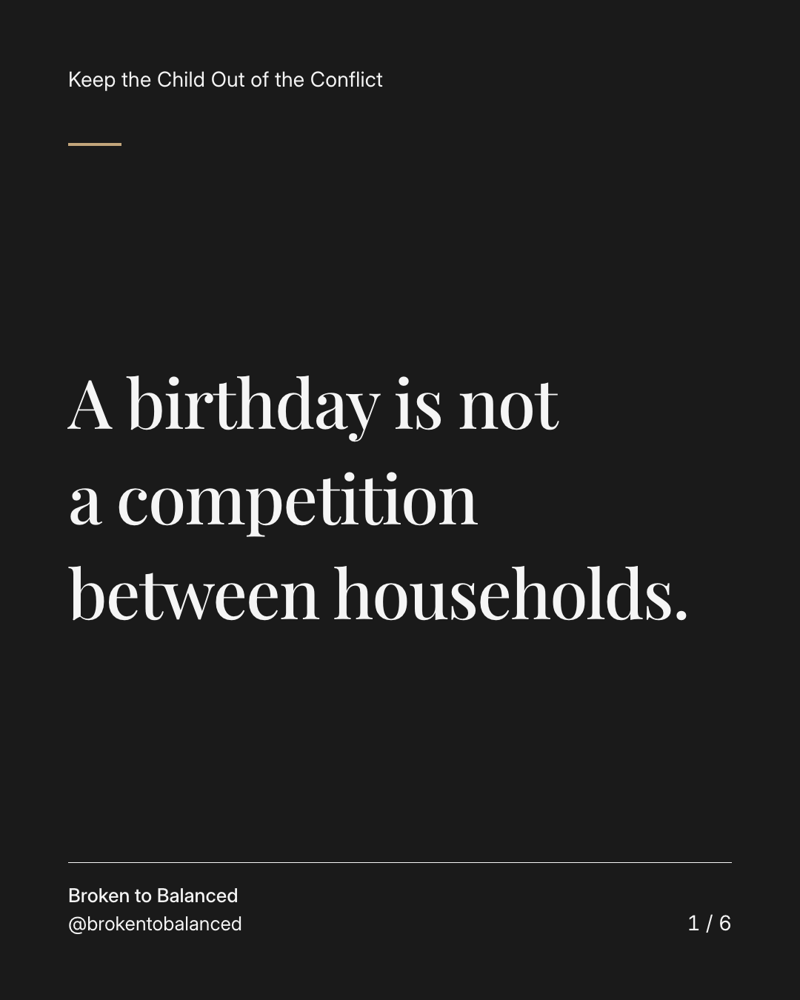
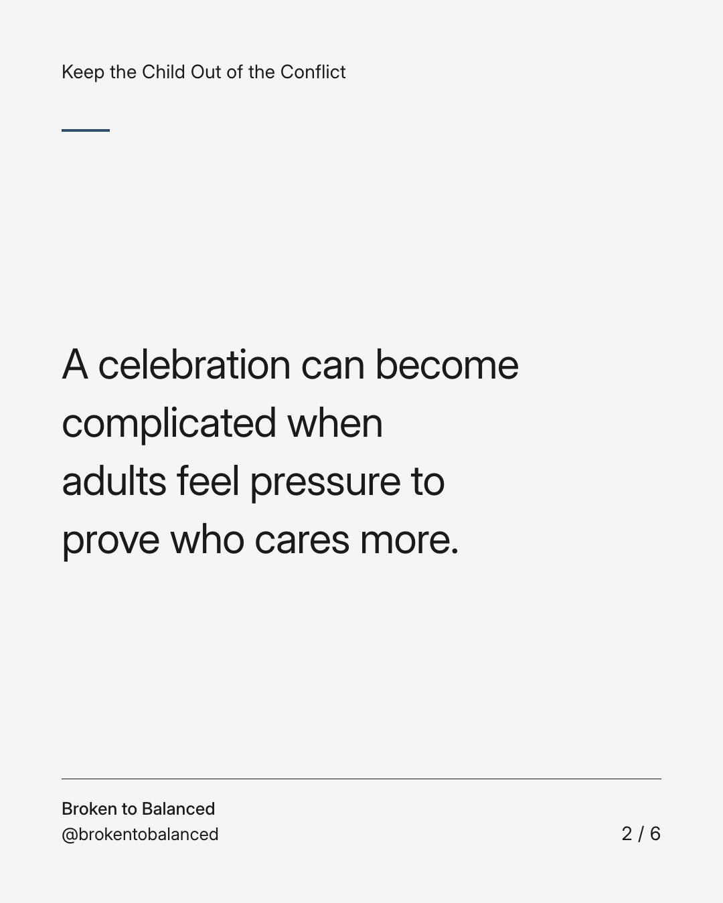
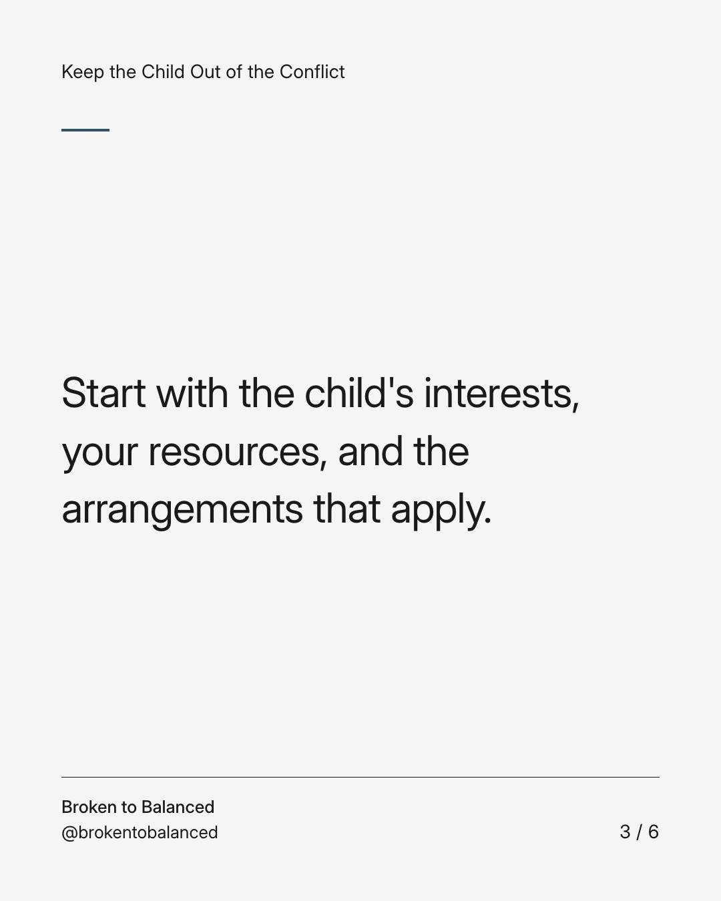
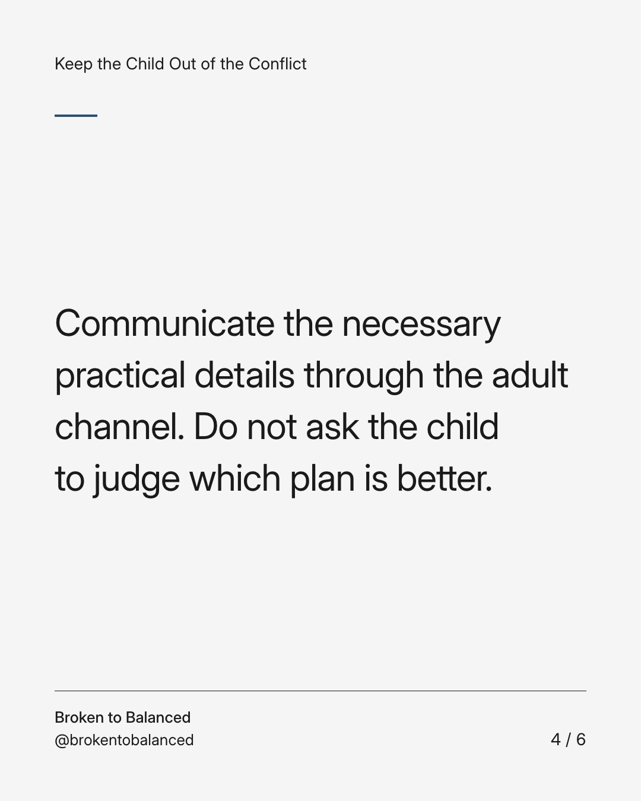
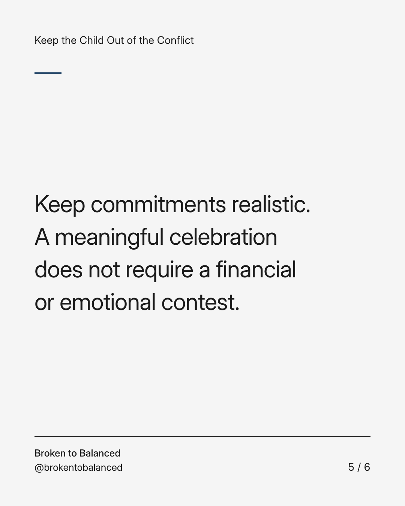
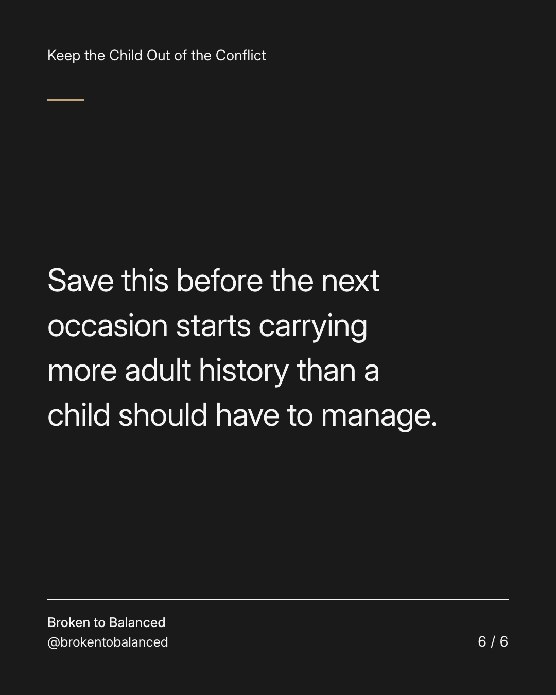

Exact text and accessibility text
A birthday is not a competition between households.
Slide 1 of 6. A birthday is not a competition between households.


Exact text and accessibility text
A celebration can become complicated when adults feel pressure to prove who cares more.
Slide 2 of 6. A celebration can become complicated when adults feel pressure to prove who cares more.


Exact text and accessibility text
Start with the child's interests, your resources, and the arrangements that apply.
Slide 3 of 6. Start with the child's interests, your resources, and the arrangements that apply.


Exact text and accessibility text
Communicate the necessary practical details through the adult channel. Do not ask the child to judge which plan is better.
Slide 4 of 6. Communicate the necessary practical details through the adult channel. Do not ask the child to judge which plan is better.


Exact text and accessibility text
Keep commitments realistic. A meaningful celebration does not require a financial or emotional contest.
Slide 5 of 6. Keep commitments realistic. A meaningful celebration does not require a financial or emotional contest.


Exact text and accessibility text
Save this before the next occasion starts carrying more adult history than a child should have to manage.
Slide 6 of 6. Save this before the next occasion starts carrying more adult history than a child should have to manage.
Exact caption
Plain-text fallback: select and copy the caption.